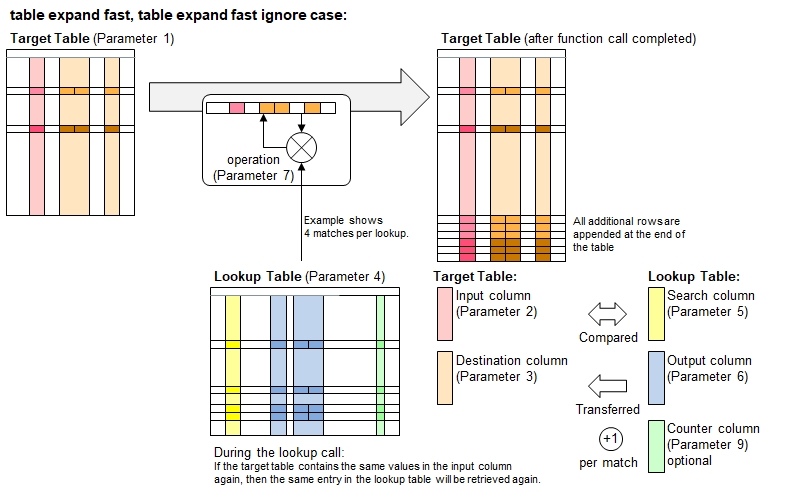

Function Names
table expand fast, table expand fast ignore caseDescription
This function works similarly to table expand(), with the only exception that the additional roes resulting from multiple lookups
are appended at the bottom of the table rather than inserting them below the original row. For very large target tables, this approach
saves significant becuase no rows will be shifted repeatedly. Consider sorting the table, e.g. using table sort rows() afterwards, if needed.

Attention: Do not confuse with the functions table lookup fast() and table integrate fast() where the 'fast' in the
function name refers to an optimized searching scheme suitable for pre-sorted tables.
Call as: procedure or function
Restrictions
Indirect parameter passing is disabled
Parameter count
7 - 9 (For parameter description and return values: see table integrate() )
Examples
table initialize( nute facts, // Nutritional facts, source: ndb.nal.usda.gov
{ { Food, Ingredient, Portion },
{ potato chips, fat, 0.34 },
{ potato chips, carbohydrates, 0.50 },
{ potato chips, sodium, 0.08 },
{ potato chips, proteins, 0.07 },
{ potato chips, others, '' }, // Remaining weight subtracted from above (--> operation identifer 'mul')
{ broccoli, water, 0.90 },
{ broccoli, proteins, 0.03 },
{ broccoli, carbohydrates, 0.06 },
{ broccoli, others, '' }, // Remaining weight subtracted from above (--> operation identifer 'mul')
{ spring water, water, 1.00 } } );
table initialize( target, { { Name, Favorite Food, Weight },
{ Rafael, Broccoli, 200 }, { Steve, Parmesan cheese, 100 },
{ George, Potato chips, 50 }, { Fred, Spring water, 1000 } } );
echo("Target table before looking up with expanding contents:");
table list ( target );
table expand fast ignore case( target, Favorite Food, { Ingredient, Weight }, nute facts, Food, { Ingredient, Portion }, { overwrite, mul} );
// Note that food portions are multiplied with the weight of the food.
// Additional rows are put to the end of the table.
echo("After expanding (listing ingredients and calculating their weights):");
table list ( target );
Output
Target table before looking up with expanding contents:
0 : Name | Favorite Food | Weight
1 : Rafael | Broccoli | 200
2 : Steve | Parmesan cheese | 100
3 : George | Potato chips | 50
4 : Fred | Spring water | 1000
After expanding (listing ingredients and calculating their weights):
0 : Name | Favorite Food | Weight | Ingredient
1 : Rafael | Broccoli | 180 | water
2 : Steve | Parmesan cheese | 100 |
3 : George | Potato chips | 17 | fat
4 : Fred | Spring water | 1000 | water
5 : Rafael | Broccoli | 6 | proteins
6 : Rafael | Broccoli | 12 | carbohydrates
7 : Rafael | Broccoli | 2 | others
8 : George | Potato chips | 25 | carbohydrates
9 : George | Potato chips | 4 | sodium
10 : George | Potato chips | 3.5 | proteins
11 : George | Potato chips | 0.5 | others
See also
table expand
table expand smart
table expand fast smart
table integrate
table lookup